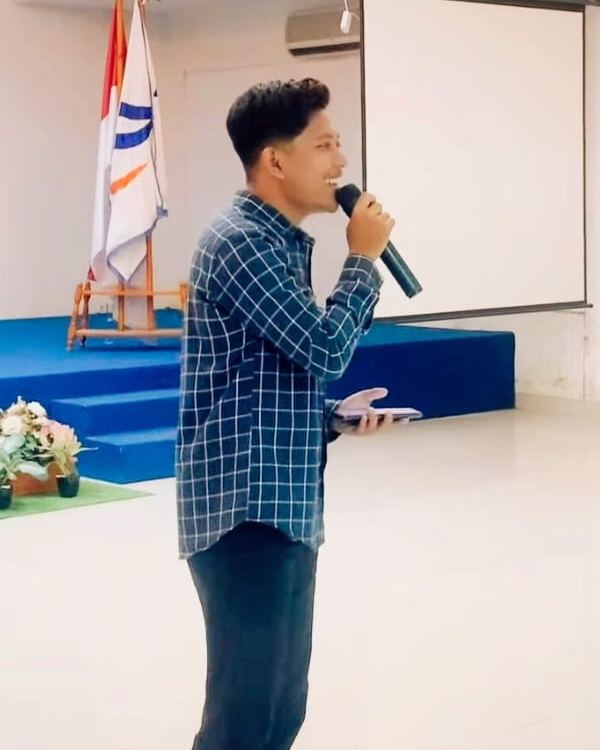
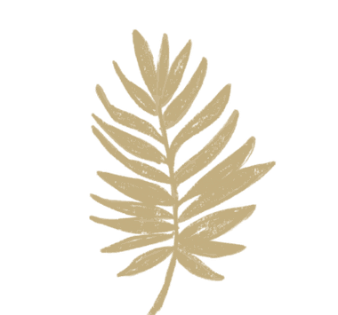
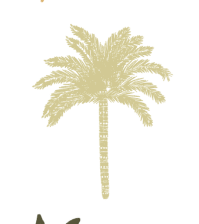
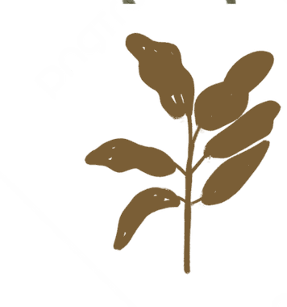
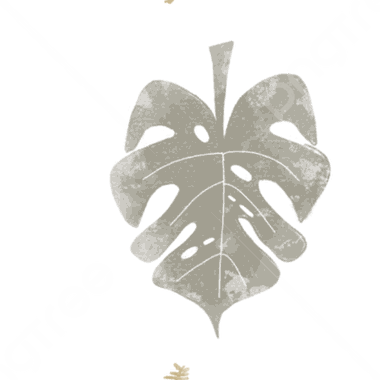
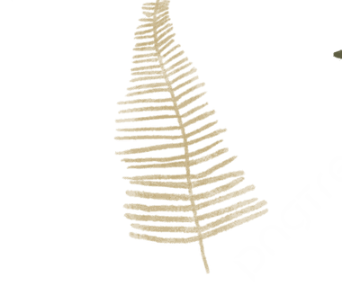
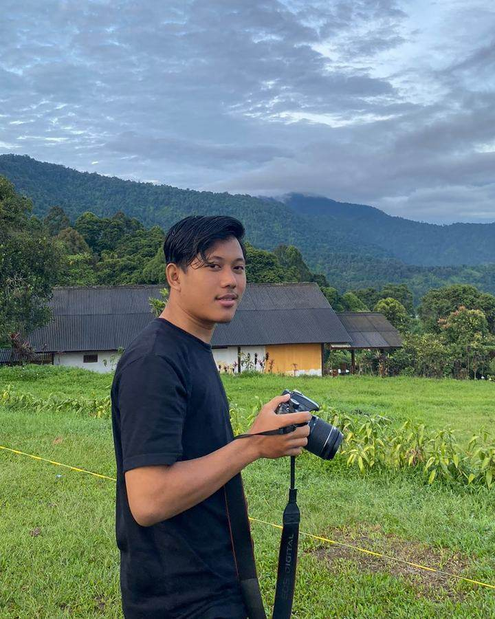

Operasional & Administrasi · Desain UMKM · IT Support
Saya membantu UMKM dan perusahaan kecil-menengah membuat operasional lebih rapi: dari administrasi dan legalitas, pengolahan data, sampai desain promosi yang siap cetak.







Lulusan Teknik Informatika Universitas Tangerang Raya dengan latar belakang SMK Multimedia. Selama lebih dari 5 tahun saya memegang banyak peran sekaligus: legalitas properti, administrasi proyek, data produksi pabrik, admin event, dan guru produktif TKJ.
Saya bukan desainer yang hanya bisa desain, dan bukan admin yang hanya bisa mengetik.
Saya orang yang bisa dipercaya memastikan pekerjaan harian berjalan beres, dari belakang layar sampai ke depan pelanggan.
Banner, menu, logo, dan spanduk. Lihat dulu, cocok baru bayar.
Rekap Excel, input stok, arsip dokumen, dan laporan harian.
Terbuka untuk posisi Staff Administrasi, Operasional, IT Support, dan Produksi di wilayah Tangerang.